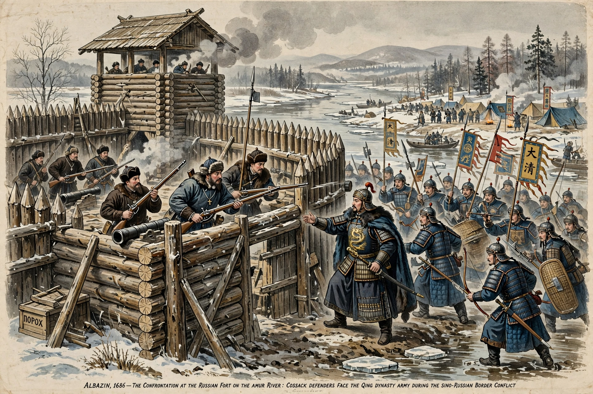

| Sino-Russian border conflicts | |
|---|---|
 | |
| Period | 1652 – 1689 (first phase); 1969 (modern phase) |
| Location | Amur and Ussuri river basins, Manchuria |
| Key events | Sieges of Albazin; Battle of Hutong; Zhenbao Island incident |
| Outcome | Treaty of Nerchinsk (1689); final demarcation 2004–2008 |
The Sino-Russian border conflicts were a series of intermittent armed confrontations between Qing dynasty China and the Tsardom (later Empire) of Russia along the Amur River frontier in Manchuria, principally in the 17th century, with a brief but dangerous revival between their communist successor states in 1969. The long border — today some 4,250 km — was not fully and finally demarcated until 2008.
Russian expansion across Siberia brought Cossack explorers into the Amur valley, a tributary region of the Qing Empire. Expeditions under Yerofey Khabarov (1649–1653) founded posts and clashed with Qing forces (notably at Achansk, 1652), while Manchu armies destroyed the Russian fort of Kumarsk (1655). In 1685 and 1686 Qing armies under the Kangxi Emperor besieged the Russian fort of Albazin twice, forcing its surrender. The resulting Treaty of Nerchinsk (1689) — negotiated in Latin with Jesuit interpreters — was the first treaty between China and a European power: Russia demolished Albazin and withdrew from the Amur, and the border was fixed along the Argun River and the Stanovoy Mountains. The Treaty of Kyakhta (1727) regularised trade and the Mongolian frontier.
In the mid-19th century a weakened Qing lost the lands north of the Amur by the Treaty of Aigun (1858) and east of the Ussuri by the Convention of Peking (1860) — together over a million square kilometres, remembered in China among the "unequal treaties". These annexations gave Russia Vladivostok and the Maritime Province. Border violence flared again in 1900 during the Boxer Rebellion, including the pogrom of Chinese residents at Blagoveshchensk.
During the Sino-Soviet split, disputes over river islands left ambiguous by the 19th-century treaties erupted into fighting: on 2 and 15 March 1969 Chinese and Soviet troops clashed on Zhenbao (Damansky) Island in the Ussuri River, with artillery duels following in August in Xinjiang. Dozens to hundreds were killed, and Soviet contingency planning reportedly contemplated nuclear strikes, before Premier Alexei Kosygin's meeting with Zhou Enlai at Beijing airport (September 1969) defused the crisis. Negotiations dragged on until the 1991 eastern-border agreement; complementary agreements in 2004 divided the last disputed islands, and final demarcation was completed in 2008.
See also: Unequal treaty · Canton System · Kangxi Emperor